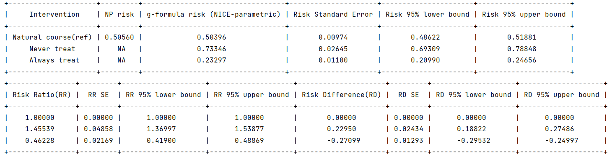
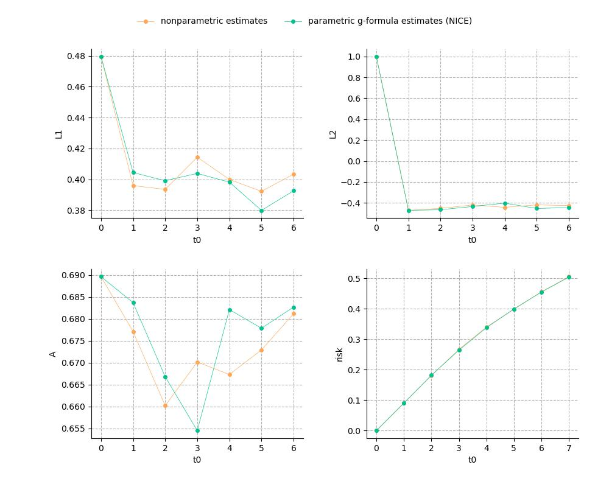

Get Started
Algorithm outline
The parametric g-formula estimator of noniterative conditional expectation (NICE) requires the specification of models for the joint density of the confounders, treatments, and outcomes over time. The algorithm implementation contains three steps: (1) Parametric estimation, (2) Monte Carlo simulation , and (3) Calculation of risk/mean under each intervention.
Parametric estimation: (a) estimate the conditional densities of each covariate given past covariate history by fitting user-specified covariate models, (b) estimate the discrete hazard (for survival outcome) or mean (for binary/continuous end of follow-up) of outcome conditional on past covariate history by fitting user-specified outcome model, (c) if the event of interest is subject to competing events and competing events are not treated as censoring events, estimate the conditional probability of the competing event conditional on past covariate history by fitting user-specified competing model.
Monte Carlo simulation: (a) generate a new dataset which is usually larger than original dataset, for each covariate, generate its simulated values at each time step using the estimated covariate model from step (1), (b) for the covariates that accept intervention assignment, their values are assigned according to the user-specified intervention rule, (c) obtain the discrete hazard / mean of the outcome based on the estimated outcome model from step (1), (d) if the event of interest is subject to competing events and competing events are not treated as censoring events, obtain the discrete hazard of the competing event based on the estimated competing model from step (1).
Calculation of risk/mean under each intervention: for binary/continuous end of follow-up, the final estimate is the mean of the outcome means of all individuals in the new dataset computed from Step (2). For survival outcome, the final estimate is obtained by calculating the mean of cumulative risks for all individuals using the discrete hazards computed from step (2).
Once the arguments required in the above three steps are specified, users can perform analysis for causal effect estimation. In this section, we give a simple example to show the basic usage of this package.
Example
Here we go through an example of estimating the effect of two static treatment strategies on risk of a failure event. The observational dataset example_data_basicdata_nocomp consists of 13,170 observations on 2,500 individuals with a maximum of 7 follow-up times. The dataset contains variables:
id: Unique identifier for each individual.
t0: Time index.
L1: Binary time-varying covariate.
L2: Continuous time-varying covariate.
L3: Categorical baseline covariate.
A: Binary treatment variable.
Y: Outcome of interest; time-varying indicator of failure.
We are interested in the risk by end of follow-up under static treatment strategies ‘‘Never treat’’ (assign 0 to the treatment at all follow-up times for all individuals) and ‘‘Always treat’’ (assign 1 to the treatment at all follow-up times for all individuals).
First, import g-formula method
import pygformula from pygformula import ParametricGformula
Then, read the data (here is an example of loading simulated data in the package) as required DataFrame type
from pygformula.data import load_basicdata_nocomp obs_data = load_basicdata_nocomp()
Specify the name of time variable, the name of individual identifier in the input data
time_name = 't0' id_name = 'id'
Specify covariate names, covariate types, and corresponding model statements
covnames = ['L1', 'L2', 'A'] covtypes = ['binary', 'bounded normal', 'binary'] covmodels = ['L1 ~ lag1_A + lag2_A + lag_cumavg1_L1 + lag_cumavg1_L2 + L3 + t0', 'L2 ~ lag1_A + L1 + lag_cumavg1_L1 + lag_cumavg1_L2 + L3 + t0', 'A ~ lag1_A + L1 + L2 + lag_cumavg1_L1 + lag_cumavg1_L2 + L3 + t0']
If there is baseline covariate (covariate with the repeated values at all time points) in the model statement, please specify it in the ‘‘basecovs’’ argument:
basecovs = ['L3']
Specify the static interventions of interest
time_points = np.max(np.unique(obs_data[time_name])) + 1 intervention_names = ['Never treat', 'Always treat'] interventions = [[[static, np.zeros(time_points)]], [[static, np.ones(time_points)]]] intvars = [['A'], ['A']]
Specify the outcome name, outcome model statement, and the outcome type
outcome_name = 'Y' outcome_model = 'Y ~ L1 + L2 + L3 + A + lag1_A + lag1_L1 + lag1_L2 + t0' outcome_type = 'survival'
Call the ‘‘ParametricGformula’’ method:
g = ParametricGformula(obs_data = obs_data, id_name = id_name, time_name=time_name, covnames=covnames, covtypes=covtypes, covparams=covparams, basecovs=basecovs, time_points=time_points, intervention_names = intervention_names, intvars=intvars, interventions=interventions, outcome_name=outcome_name, outcome_model=outcome_model, outcome_type = outcome_type) g.fit()
Finally, get the output:

“Intervention”: the name of natural course intervention and user-specified interventions.
“NP-risk”: the nonparametric estimates of the natural course risk.
“g-formula risk”: the parametric g-formula estimates of each interventions.
“Risk Ratio (RR)”: the risk ratio value between each intervention and reference intervention.
“Risk Difference (RD)”: the risk difference value between each intervention and reference intervention.
In the output table, it shows the g-formula risk results under specified interventions, as well as the natural course intervention (which means no intervention on the treatment variable). It also reports the nonparametric risk result of natural course, which can be used to assess model misspecification of paramtric g-formula. Meanwhile, the risk ratio and risk difference between the specific intervention and reference intervention (which is set to natural course intervention by default) are calculated.
Users can also get the estimate standard errors and 95% confidence intervals of the g-formula estimate by specifying the ‘‘nsamples’’ argument. For example, specifying ‘‘nsamples’’ as 20 with parallel processing using 8 cores:
g = ParametricGformula(obs_data = obs_data, id_name = id_name, time_name=time_name, time_points = time_points, interventions=interventions, int_descripts = intervention_names, intvars=intvars, covnames=covnames, covtypes=covtypes, covmodels=covmodels, basecovs=basecovs, outcome_name=outcome_name, outcome_model=outcome_model, outcome_type=outcome_type, nsamples=20, parallel=True, ncores=8) g.fit()
The package will return following results:

The pygformula also provides plotting for risk curves of interventions, which can be called by:
g.plot_interventions()
It will return the g-formula risk at all follow-up times under each intervention:
{kind=link}
User can also get the plotting of parametric and nonparametric estimates of the risks and covariate means under natural course by:
g.plot_natural_course()
Running example:
import numpy as np import pygformula from pygformula import ParametricGformula from pygformula.parametric_gformula.interventions import static from pygformula.data import load_basicdata_nocomp obs_data = load_basicdata_nocomp() time_name = 't0' id_name = 'id' covnames = ['L1', 'L2', 'A'] covtypes = ['binary', 'bounded normal', 'binary'] covmodels = ['L1 ~ lag1_A + lag2_A + lag_cumavg1_L1 + lag_cumavg1_L2 + L3 + t0', 'L2 ~ lag1_A + L1 + lag_cumavg1_L1 + lag_cumavg1_L2 + L3 + t0', 'A ~ lag1_A + L1 + L2 + lag_cumavg1_L1 + lag_cumavg1_L2 + L3 + t0'] basecovs = ['L3'] outcome_name = 'Y' outcome_model = 'Y ~ L1 + L2 + L3 + A + lag1_A + lag1_L1 + lag1_L2 + t0' outcome_type = 'survival' time_points = np.max(np.unique(obs_data[time_name])) + 1 int_descripts = ['Never treat', 'Always treat'] interventions = [[[static, np.zeros(time_points)]], [[static, np.ones(time_points)]]] intvars = [['A'], ['A']] g = ParametricGformula(obs_data = obs_data, id_name = id_name, time_name=time_name, time_points = time_points, interventions=interventions, int_descripts = int_descripts, intvars=intvars, covnames=covnames, covtypes=covtypes, covmodels=covmodels, basecovs=basecovs, outcome_name=outcome_name, outcome_model=outcome_model, outcome_type=outcome_type, nsamples=20, parallel=True, ncores=8 ) g.fit() g.plot_interventions() g.plot_natural_course()